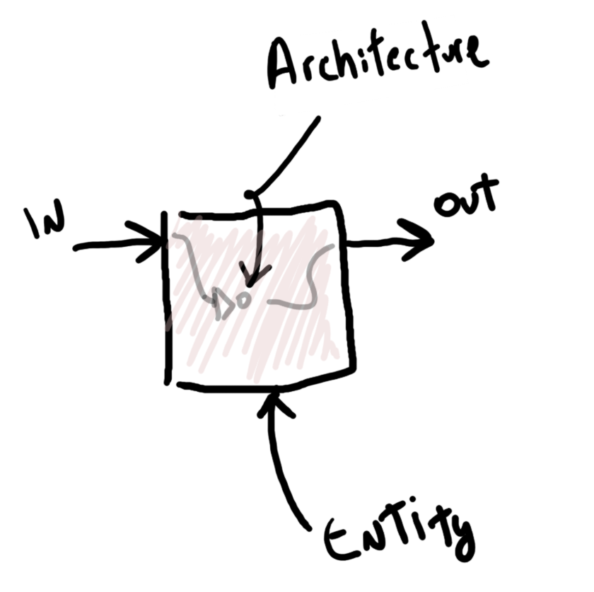
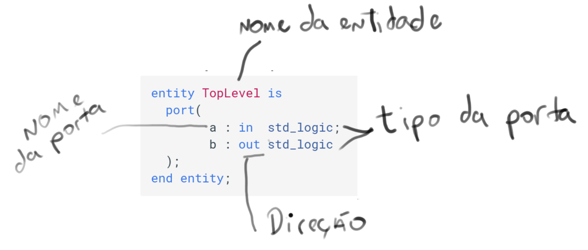
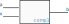
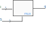
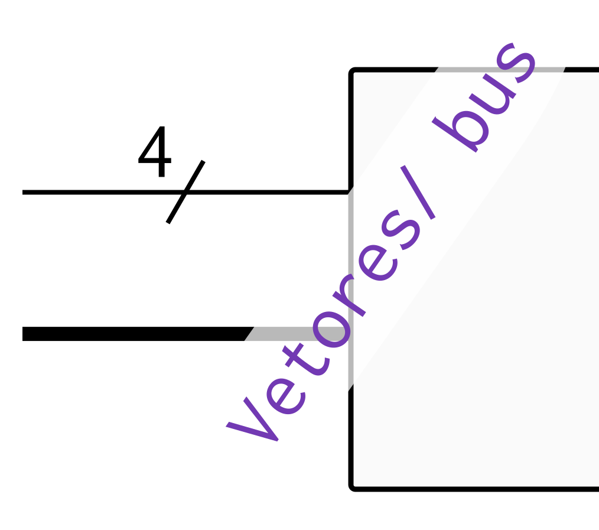
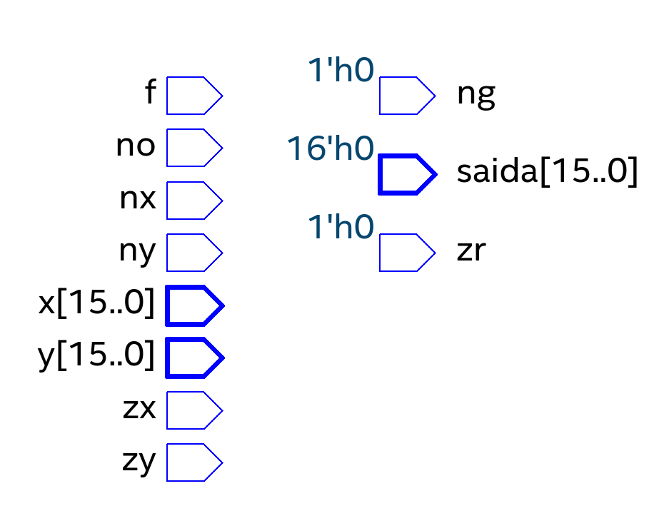
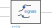

Introdução¶
2020-2
Material atualizado.
| Estudando | |
|---|---|
| Leituras (extra) | |
| Free Range VHDL BOOK | |
 |
VHDL CookBook |
| VHDL Básico: Parte 1 - Entidade | |
| VHDL Básico: Parte 2 - Arquitetura | |
| Vídeos (extra) | |
|
O VHDL é uma linguagem de descrição de hardware (Hardware Description Language - HDL), não sendo uma linguagem de programação. Foi criada durante a Guerra Fria no Departamento de Defesa Americano (DoD-DARPA) para a documentação de hardwares complexos (complementava/substituía os esquemáticos). Com a evolução da tecnologia agora é possível utilizar a linguagem para implementar sistemas digitais em hardwares programáveis (FPGA/CPL/...).
Por não ter sido criada para o fim que a utilizamos, o VHDL é no primeiro momento bastante intrigante. Mas com o usar, vocês irão se acostumar com a linguagem e serão capazes de realizar hardwares cada vez mais complexos.
Note
Algumas vezes iremos utilizar a palavra 'código' para descrever um projeto em VHDL, tenha em mente que não estamos falando de um programa e sim de uma descrição de hardware.
Um programa em Python/Java/C é como uma receita de bolo que será executada em uma cozinha que já está montada, essa cozinha é o sua CPU (processador), e não dá para mudar com código (software), o que você muda de um programa para outro é a receita. Uma cozinha é capaz de realizar diversas receitas diferentes ....
No caso do VHDL não temos essa 'cozinha' pronta, na verdade, podemos criar qualquer cozinha que quisermos. Com o VHDL você será o arquiteto de cozinhas, capaz de criar praticamente qualquer hardware! E então realizar suas receitas na cozinha que criou.
Regras de Ouro do VHDL¶
- VHDL é uma descrição, ou projeto, do hardware e não uma programação dele.
- As linhas de código não são executadas sequencialmente com exceção de algumas construções da linguagem.
- As linhas de código serão executadas simultaneamente.
- Deve-se possuir uma visão de como o circuito digital final será.
- Se ele for muito complexo, use uma divisão em blocos menores até chegar às unidades construtivas básicas.
Básico¶
Um código em VHDL possui basicamente três partes:
- Declaração de bibliotecas utilizadas
library ieee; use ieee.std_logic_1164.all; use ieee.numeric_std.all; use work.all; - Declaração das entradas e saídas desse bloco (entidade)
entity TopLevel is port( a : in std_logic; b : out std_logic ); end entity; - Implementação da lógica que relaciona as entradas e saídas do módulo (arquitetura)
architecture rtl of TopLevel is begin a <= not b; -- a saída A recebe a entrada B end rtl;

Comentários em VHDL
Comentários em VHDL são iniciados com dois traços: --. Exemplo:
-- Comentário em VHDL
-- a <= not b; Trecho de código comentado
a <= `1`; -- comentário
Bibliotecas¶
As bibliotecas do VHDL são onde as definições dos tipos e das operações são realizadas, não será necessário mexer com isso ao longo do semestre, essa parte já vai estar pronta nos projetos que vocês forem mexer.
Entidade (entity)¶
Podemos pensar na entidade como o trecho de código que define o módulo como uma caixa preta, ela explicita quem são as entradas e quais são as saídas desse módulo. Assim como um CHIP, que possui pinos de entradas e pinos de saída.
No exemplo anterior, o módulo é chamado de TopLevel e possui uma entrada a e uma saída b. Tanto a entrada quanto a saída são do tipo std_logic. Cada porta tem a descrição de sua direção (in, out), como detalhado a seguir:

Uma entidade pode ter nenhuma ou 'infinitas' portas, para adicionarmos uma porta nova a uma entidade, basta adicionarmos uma nova linha com as três propriedades:
NOME : DIREÇÃO TIPO;
Tip
Note a necessidade do ; no final da linha, isso indica para o VHDL
que essa descrição 'acabou'. A quebra de linha Enter não tem uso para o
VHDL, só serve para facilitar nossa leitura.
Warning
O ; não deve aparecer na última porta! No exemplo anterior a porta b : out STD_LOGIC não possui ;.
Example
Adicionando uma entrada x ao módulo anterior:
entity TopLevel is
port(
a : in std_logic;
b : out std_logic;
x : in std_logic
);
end entity;
Nome¶
No VHDL você não pode usar um nome de porta que:
- Comece com um número: (
0,1, ... ), ex:0bus : out std_logic; - É uma das muitas palavras reservadas:
in,out,not, ex:bus : out std_logic; - Possua espaço:
entrada 1: in std_logic;
Para mais detalhes, dê uma olhada na documentação completa
Direção¶
A direção in, out define se a informação irá entrar no módulo ou sair do módulo. Por exemplo, se quisermos 'ler' um botão, devemos declarar essa
porta como sendo uma 'entrada' (in) do módulo, mas se quisermos acionar um LED, devemos declarar essa porta como 'saída' (out), pois ela será controlada por nossa lógica.
Tipo¶
O tipo define se a porta será composta por um único bit std_logic ou por
um vetor de bits std_logic_vector(2 downto 0) (vetor de 3 bits).
O tipo STD_LOGIC é muito mais complexo que só um bit, mas vamos deixar isso de lado
por ora.
Exemplos¶
- Módulo com duas entradas binárias:
a,xe uma saídab
entity Comp1 is
port(
a : in std_logic;
x : in std_logic;
b : out std_logic
);
end entity;

- Módulo chamado MUX que possui 4 entradas na forma de um vetor (
I : in std_logic_vector(3 downto 0)), um seletor de dois bits na forma de um vetor (S) e uma saídaqna forma de um bit.
entity mux is
port(
I : in std_logic_vector(3 downto 0);
S : in std_logic_vector(1 downto 0);
q : out std_logic
);
end entity;

Tip
Note que a entrada I foi declarada como sendo um vetor que começa em 3 e termina em 0, possuindo no total 4 bits: 3, 2, 1, 0
Em diagrama elétrico é utilizado a seguinte notação para indicar um vetor de bits:
- Uso de uma
/no fio com a indicação da quantidade de bits - Uso de uma linha mais grossa, para indicar um vetor

- Entidade de uma ULA
entity ALU is
port (
x,y: in STD_LOGIC_VECTOR(15 downto 0); -- entradas de dados da ALU
zx: in STD_LOGIC; -- zera a entrada x
nx: in STD_LOGIC; -- inverte a entrada x
zy: in STD_LOGIC; -- zera a entrada y
ny: in STD_LOGIC; -- inverte a entrada y
f: in STD_LOGIC; -- se 0 calcula x & y, senão x + y
no: in STD_LOGIC; -- inverte o valor da saída
zr: out STD_LOGIC; -- setado se saída igual a zero
ng: out STD_LOGIC; -- setado se saída é negativa
saida: out STD_LOGIC_VECTOR(15 downto 0) -- saída de dados da ALU
);
end entity;

nota
Note que a primeira linha declara duas portas com nome x e y com a mesma direção in e do tipo std_logic_vector(15 downto 0). Isso é um atalho no VHDL e deve ser evitado. O ideal é reescrever essa linha como a seguir:
port (
x: in STD_LOGIC_VECTOR(15 downto 0); -- entrada X de dados da ALU
y: in STD_LOGIC_VECTOR(15 downto 0); -- entrada Y de dados da ALU
Arquitetura (architecture)¶
A arquitetura (architecture) define a relação das entradas com as saídas da entidade. Nessa parte é onde será construída a lógica digital desse módulo. Pense que é na arquitetura onde transcrevemos uma equação lógica, ou onde descrevemos uma memória.
architecture rtl of TopLevel is
-- Aqui é declaro os possíveis:
-- a) sinais internos de uma entidade
-- b) outras entidades que essa entidade pode utilizar
begin
-- Aqui é onde a coisa acontece de verdade
-- onde é feita a descrição da lógica digital
a <= not b;
end rtl;
Operações básicas¶
Suponha o uso da entidade a seguir para os exemplos que serão apresentados
entity Foo is
port(
x : in std_logic;
y : in std_logic;
q : out std_logic;
p : out std_logic
);
end entity;
No VHDL usamos <= para representar que alguma coisa (a esquerda da seta) recebe algum outro valor (a direita da seta). Exemplos:
q <= x;qrecebe o valor dex- Na prática estamos conectando um fio de
xque liga emq
q <= '0';qrecebe o valor0- Na prática estamos conectando um fio que sai de
qe liga no terra
q <= '1';qrecebe o valor1- Na prática estamos conectando um fio que sai de
qe liga no vcc
Note
Note que aqui estamos usando aspas simples: '0' e '1' para indicar um número binário (std_logic). Aspas dupla "0101" em VHDL significa que estamos trabalhando com um vetor de números binários (std_logic_vector).
Podemos utilizar portas lógicas nas operações, alguns operadores implementados pela linguagem, são: not, and, or, nand, nor, xor, xnor. O uso dos operadores é feito da seguinte maneira:
q <= not x;qrecebe o valor dexnegado
q <= x and y;qrecebe o valor dexEy
p <= x xor y;qrecebe o valor dexXORy
Warning
Em VHDL não é possível 'ler' uma saída, as seguintes operações não pode ser realizada:
q <= not x; -- x é saída
p <= q; -- q é saída
Operação com vetores¶
Suponha o uso da entidade a seguir para os exemplos que serão apresentados
entity Bar is
port(
a : in std_logic;
b : in std_logic_vector(3 downto 0);
q : out std_logic;
p : out std_logic_vector(2 downto 0)
);
end entity;
Exemplos de operação com vetores:
p <= "100"precebe o valor em binário100
p <= not "100"precebe o valor em binário011
p <= b(2 downto 0);precebe os três primeiros bits deb
p(0) <= a;pbit 0recebe o valor da entradaa
q <= not b(1);- a saída binária
qrecebe obit 1da entradabnegado.
- a saída binária
Tip
É comum confundir quando usar aspas simples '' e aspas dupla "", fique atento aos
erros de compilação.
signal¶
Sinais são declarados entre a palavra reservada architecture e o begin e servem para
facilitar/ possibilitar o desenvolvimento de um sistema digital, eles só são visíveis
dentro de uma entidade e servem como 'fios' internos de um módulo.

Sinais são diferente de portas não possuem direção, e são declarados da seguinte maneira:
signal NAME : TYPE
TYPEpode ser:std_logic/std_logic_vector, entre outros.
Exemplo:
architecture rtl of TopLevel is
-- Declaração de sinais
signal aux1 : std_logic;
signal aux2 : std_logic_vector(1 downto 0);
-- inicio da implementação
begin
--------------------
aux1 <= not a;
q <= aux1;
p(0) <= aux1;
--------------------
aux2 <= b(3 downto 2);
p(2 downto 1) <= aux2;
end rtl;
No exemplo anterior, criamos um sinal auxiliar chamado de aux1 que recebe a entrada a negada, esse sinal é então atribuído a saída q e ao bit 0 da saída p. Outro sinal aux2, vetor de 2 bits recebe os dois bits mais significativos da entrada b e então é atribuído a saída p, bits 2 e 1.